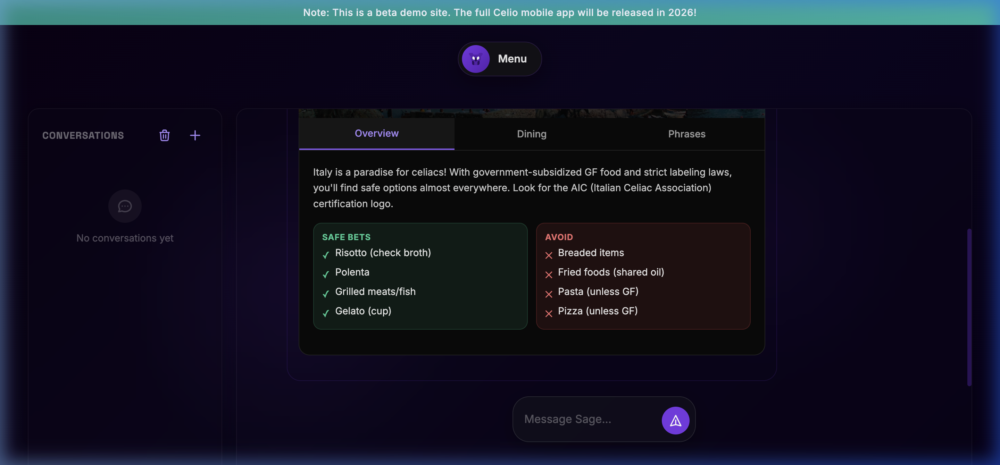
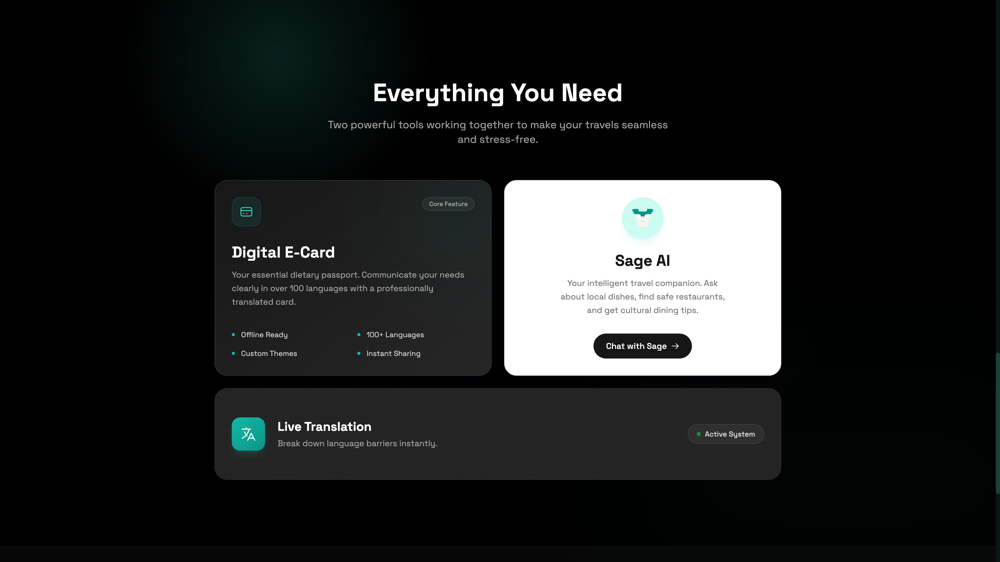

The Challenge: Closing the Trust Gap
"I don't trust the translation app to understand my severity. I don't trust the waiter's preference." It's a medical necessity where a single crumb ruins a trip. The primary source of friction lies in the overwhelming cognitive burden of constantly evaluating risks, coupled with the apprehension of miscommunication in high-stress, foreign settings.
I built Celio because I live this. The goal was to close the Trust Gap that exists when you hand over a translated note and just hope it works. Existing solutions are often clinical, require server dependence, and increase anxiety. These are luxuries you don't have when you're hungry in a remote village with zero cell coverage.
The Strategy: A Survival Kit Approach
Celio is more than a tool; it's a survival kit rooted in strategic design. It tackles the problem by focusing on communication reliability and vetted information:
1. The Translation Card
Translates allergy profiles into 12 languages with local text-to-speech audio and native Apple & Google Wallet integration.
2. Sage AI (Local LLM)
An on-device AI assistant running entirely in-browser via WebLLM, allowing travelers to query local safety guides offline with 0% server latency.
3. Interactive Local Maps
Offers client-side geolocation filtering for 100% Gluten-Free spots, groceries, and vetted restaurants without requiring active cell connection.


Sage AI: On-Device Privacy & Offline Inference
To ensure travelers can ask complex dietary questions in airplane mode or subterranean dining venues, I integrated WebLLM to run small language models directly in WebGPU memory.

Five Key Findings From User Testing
Eliminated UI Sluggishness
Participants described early prototypes as laggy. I traced the bottleneck to server round-trips and switched to Alpine.js for client-side rendering, rendering interactions instantaneous.
Text Alone Wasn't Enough
Restaurant staff in busy environments preferred audio confirmation. Adding native Web Speech API local audio playback increased waiter confidence and reduced communication friction.
Built to Work Under Extreme Stress
Users need an interface intuitive enough to operate while standing up, stressed, and handing a phone across a noisy restaurant table. The UI was redesigned around 2-tap simplicity.
Native Wallet Pass Integration
Integrating Apple Wallet (.pkpass) and Google Wallet passes allows users to bypass network dependencies entirely, opening translated allergy passes directly from the lock screen.
Offline Establishment Geolocation
Pre-indexed establishment datasets allow travelers to filter 100% gluten-free restaurants and bakeries without loading live map tiles over cellular networks.

Reflection & Systems Takeaways
Building Celio taught me that research isn't optional when you're building something real. The audio feature, the Apple Wallet request, and the Alpine.js architecture shift all came from observing real human behavior under pressure. When building safety-critical tools, offline-first execution and deterministic performance are mandatory.